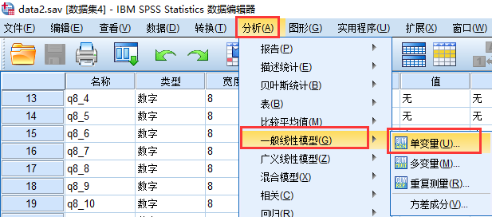
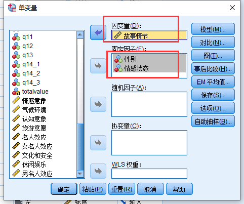
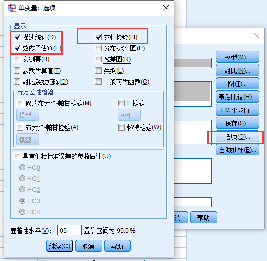
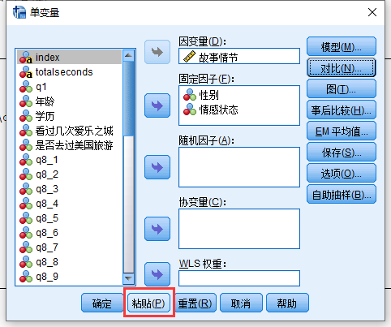
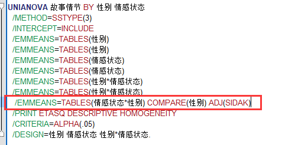
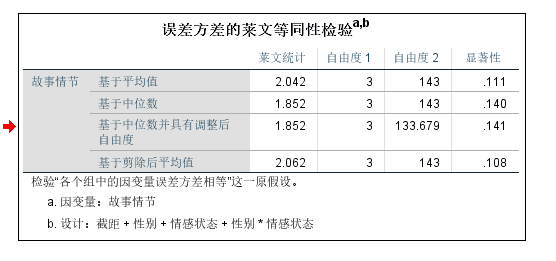
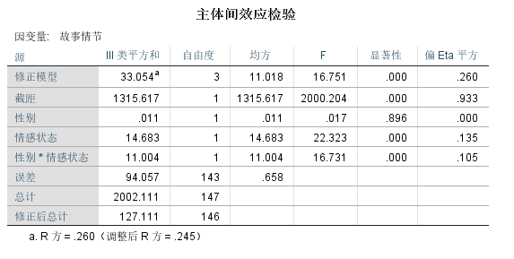
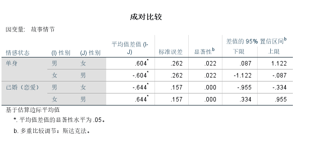
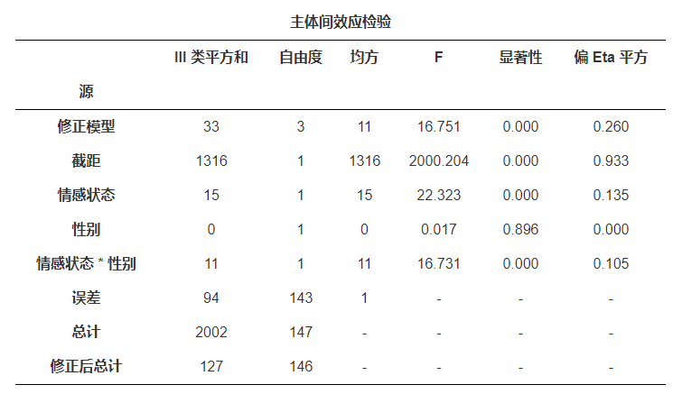
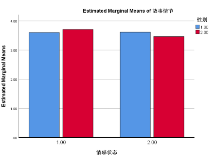

…
案例介绍
我们调查了147位年轻人, 想了解一下多大程度上因为故事情节去看一个电影, 我们同时收集了被试的性别和情感状态(是否单身), 我们想知道, 不同性别和情感状态的人, 电影的故事情节的吸引力有何差别? 所以我们需要使用双因素方差分析。
这是一个2x2的两因素方差分析, 并且因为交互作用显著, 所以
前提假设
- 因变量是连续变量
- 存在两个自变量，且都是分类变量
- 具有相互独立的观测值
- 不存在显著异常值
- 残差近似正态分布
- 各分类等方差性
SPSS操作
依次打开菜单: 分析–>一般线性模型–>单变量:

我们将”故事情节”设置为因变量, “性别”和”情感状态”是固定因子, 这时候你自己得意识到为什么它们是固定因子而不是随机因子,因为我们的样本中包含性别的全部种类和情感状态的全部种类, 所以他们都是固定因子, 如果我调查的是”年龄”, 但是并不包含全部的年龄组, 那就应该叫做随机因子。

在打开的对话框中选择: 选项, 在选项对话框中, 我们勾选”描述统计”, “齐性检验”和”效应量估算”

下面我们需要编辑一下代码, 因为我们需要进行简单效应分析, 意思是, 我们需要在不同情感状态下, 比较不同性别的人在”故事情节”这个指标上是否存在差异, 因为spss界面上无法完成, 所以需要使用代码。
点击”粘贴”会打开一个代码编辑的界面

在这里我们可以加入一行代码, 如图, 这个代码的意思很简单, 就是说”情感状态”和”性别”是交叉设计, 我们需要在不同”情感状态”下比较”性别”, 反过来你可以说, 想在不同”性别”下比较”情感状态”, 这也可以, 但是代码就变成:
1 | /EMMEANTABLES(情感状态*性别) COMPARE(情感状态) ADJ(SIDAK) |

最后, 我们运行代码就可以了
结果解读
结果显示方差齐, 如果方差不齐, 也不用着急, 因为当各组样本量差不多时, 方差不齐对结果的影响不大, 所以仍然可以使用GLM进行方差分析。

下面的表格对各个变量的主效应的检验, 根据显著性这一列, 显著性低于0.05就可以认为主效应显著, 显然我们可以知道”情感状态”的主效应显著, 并且”情感状态”和”性别”的交互效应显著。

由于交互效应显著, 我们需要进一步比较在不同”情感状态”下, 性别之间是否存在显著差异, 从表中结果可知, 在单身状态下, 男生比女生更容易受故事情节的影响而去看某个电影, 但是在婚恋状态下, 女生反而比男生更容易受故事情节的吸引而去看某部电影。

结果汇报
本研究均使用均数±标准差反映数据情况，用箱式图检验异常值，用Shapiro-Wilk检验数据正态性，用Levene方差齐性检验判断等方差性。结果显示，本研究数据没有异常值，残差接近正态分布（P>0.05），并且具有等方差性（P>0.05）。
我们最重要的表格就是这个”主效应检验”, 根据表格数据, 写结论:
情感状态的主效应显著(F=22.323,df=1,P<.001)；性别的主效应不显著(F=0.017,df=1,p>.05)；情感状态和性别交互效应显著(F=16.731,df=1,P<.001)。

因为交互作用显著, 进一步做简单效应分析,我们可以将各组均值绘制到图中, 然后配合上面的”成对比较”表格进一步得出结论:
在单身状态下, 性别的简单效应显著(p<.05), 也就是说男生比女生更容易受故事情节的影响而去看某个电影, 但是在婚恋状态下, 性别的主效应显著((p<.01), 但是女生反而比男生更容易受故事情节的吸引而去看某部电影。

参考
- 固定和随机因子: https://web.ma.utexas.edu/users/mks/statmistakes/fixedvsrandom.html
- 方差分析属于特殊的回归分析: https://www.theanalysisfactor.com/why-anova-and-linear-regression-are-the-same-analysis/
- 回归中,自变量01编码和12编码的区别: https://www.researchgate.net/post/What_is_the_difference_between_0_1_and_1_2_coding_for_dichotomous_variables_in_regression_analysis
注意
本文由jupyter notebook转换而来, 您可以在这里下载notebook
统计咨询请加QQ 2726725926, 微信 mllncn, SPSS统计咨询是收费的
微博上@mlln-cn可以向我免费题问
请记住我的网址: mlln.cn 或者 jupyter.cn